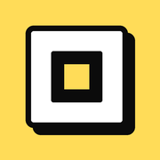

Кабинет
Установите «Кабинет» на экран
Нажмите
«Поделиться» — внизу экрана в Safari.
Пролистайте и выберите
«На экран «Домой»»
.
Нажмите
«Добавить»
— иконка появится на экране, приложение будет открываться без панели браузера.
Позже
Понятно
Установить «Кабинет» как приложение?
Иконка на рабочем столе, запуск на весь экран без адресной строки.
Не сейчас
Установить